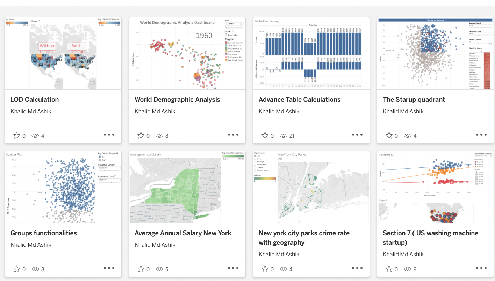
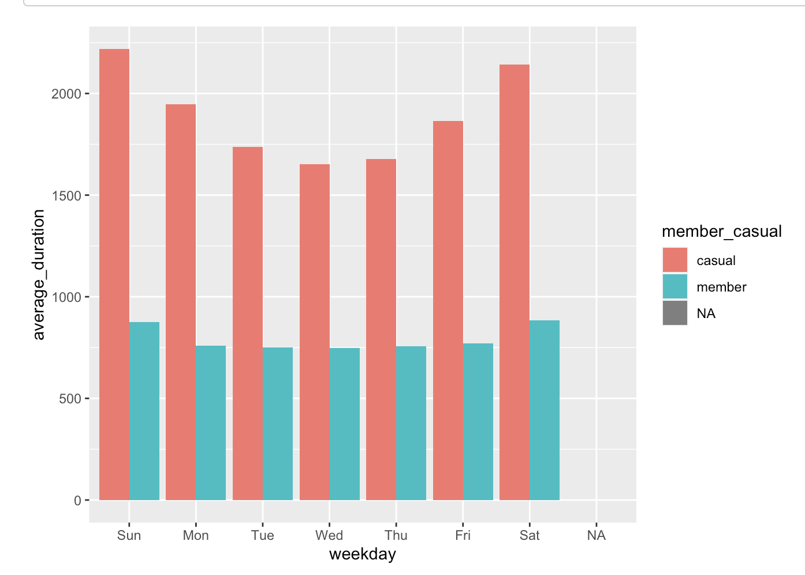
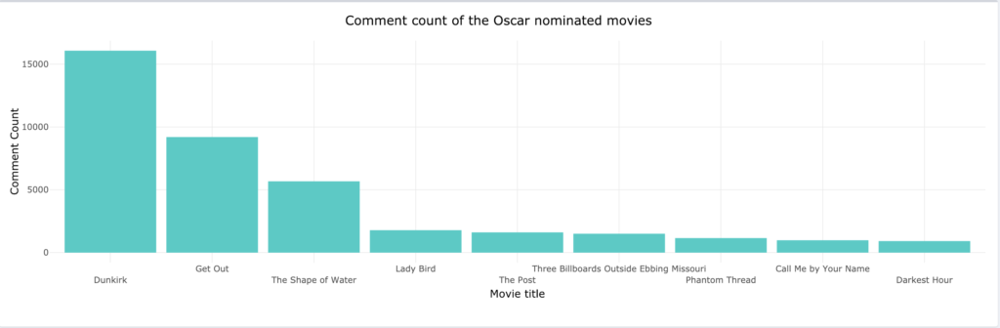

Tableau dashboard projects on World Demographic Analysis, LOD calculation, Crime rate geography analysis in New york, etc.
PowerBI Dashboard Projects
PowerBI dashboard projects on Amazon Fashion Dashboard, Health-Care Analysis, Superstore sales forecasting, HR Analytics, E-commerce Dashboard, etc.
Pneumonia Detection using Deep Learning

This project utilizes deep learning techniques to detect pneumonia from chest X-ray images. It employs the VGG16 convolutional neural network, pre-trained on ImageNet, and fine-tuned for binary classification (normal vs. pneumonia). The model is trained on a dataset of chest X-ray images and achieves high accuracy in distinguishing pneumonia cases.
The project includes:
-- Data preprocessing using Keras' ImageDataGenerator for augmentation.
-- Model training and evaluation with metrics like accuracy and loss.
-- Prediction capabilities for classifying new chest X-ray images.

Click on the link to check out the analytical dashboard projects prepared in MS Excel
International Debt Statistics Analysis in PostgreSQL
In the Analyze International Debt Statistics project, I have written SQL queries to explore and analyze international debt using the World Bank dataset. SQL is the most popular and essential tool for performing data analytics on the go.
Analyzing American Baby Name Trends in PostgreSQL

What makes a name timeless or trendy? In this project, you'll use data published by the U.S. Social Security Administration spanning over a hundred years to understand American baby name tastes.
The ranking, grouping, joining, ordering, and pattern matching skills you'll use in this project are broadly applicable: understanding changing tastes is a key competency for businesses as well as parents searching for a baby name!
World's Oldest Business Analysis in PostgreSQL

An important part of business is planning for the future and ensuring that the business survives changing market conditions. Some businesses do this remarkably well and last for hundreds of years. In this project, you'll explore data from BusinessFinancing.co.uk on the world's oldest businesses: when were they founded, and which industries do they belong to?
Like many business problems, the data we'll explore is contained in several different datasets. In order to understand the world's oldest businesses, we will first need to use joining techniques to merge our data. From there, we can use manipulation tools such as grouping and filtering to answer questions about these historic businesses.
Spam Classification in Deep Learning

This project employs neural networks to develop a robust spam classification model for SMS messages. Through natural language processing, data preprocessing involves text transformation using NLTK. The neural network, built with TensorFlow and Keras, undergoes training and evaluation, showcasing accuracy improvements over epochs.
Earthquake Prediction and Analysis using USGS Data
Data Analysis and future prediction
This project uses machine learning techniques to predict earthquake magnitude based on past earthquake data. The project includes data cleaning, exploratory data analysis, visualization, and model training using linear regression and random forest models.
The project found that earthquake magnitude has a strong positive correlation with depth, and that there is a negative correlation between earthquake magnitude and latitude. Additionally, the project found that a random forest model was more accurate than a linear regression model in predicting earthquake magnitude.
The insights gained from this project can be used to inform future earthquake preparedness efforts. By understanding the factors that contribute to earthquake magnitude, it may be possible to better prepare for and respond to future earthquakes.
Visualizing Covid19 in R
Data Analysis on covid 19 spread all over the world
In the Visualizing COVID-19 project, you will visualize COVID-19 data using the most popular R library ggplot. You will analyze confirmed cases worldwide, compare China with other countries, learn to annotate the graph, and add a logarithmic scale. The project will teach you skills that are in high demand for R programmers
A/B Testing For Marketing Strategy
A/B Testing Analysis

In A/B testing, we analyze the results of two marketing strategies to choose the best one for future marketing campaigns. For example, when I started an ad campaign on Instagram to promote my Instagram post for the very first time, my target audience was different from the target audience of my second ad campaign. After analyzing the results of both ad campaigns, I always preferred the audience of the second ad campaign as it gave better reach and followers than the first one.
Mobile Games A/B Testing: Cookie Cats
A/B Testing Analysis

In the Mobile Games A/B Testing with Cookie Cats project, I have analyzed the result of A/B testing, where the first gate in Cookie Cats was moved from level 30 to level 40. In detail, I have applied data manipulation, statistics, bootstrap, data visualization, and critical thinking to decide which version is the best.
Find Similar Movie from plot summaries

In the Find Movie Similarity from Plot Summaries project, I have used NLP and clustering to find the similarities between movie plots. It is the perfect project if you are looking to apply statistical techniques to text data.
I have imported two datasets, combined them, performed tokenization and stemming, converted words into vectors, and used KMeans to perform clustering. Furthermore, you will calculate similarity distance and visualize the results using Matplotlib, Linkage, and Dendrograms.
Bat Virus Diseases Analysis
Exploratory Data Analysis
This project analyzes a comprehensive dataset on bat viruses, uncovering insights into virus distribution, detection methods, and temporal trends. The findings highlight the significance of bats as virus reservoirs and emphasize the importance of ongoing research for zoonotic transmission prevention.
Android app market on Google Play
Data Analysis
Mobile apps are everywhere. They are easy to create and can be lucrative. Because of these two factors, more and more apps are being developed. In this notebook, we will do a comprehensive analysis of the Android app market by comparing over ten thousand apps in Google Play across different categories. We'll look for insights in the data to devise strategies to drive growth and retention.
Case Study 1: How does a bike-share navigate speedy success?
Data Analysis

This analysis is based on the Divvy case study “‘Sophisticated, Clear, and Polished’: Divvy and Data Visualization” written by Kevin Hartman (found here: https://artscience.blog/home/divvy-dataviz-case-study. The purpose of this script is to consolidate downloaded Divvy data into a single dataframe and then conduct simple analysis to help answer the key question: “In what ways do members and casual riders use Divvy bikes differently?”
In this case study, I have performed data analysis for a fictional bike-share company in order to help them attract more riders. Along the way, I performed numerous real-world tasks of a junior data analyst by following the steps of the data analysis process: Ask, Prepare, Process, Analyze, Share, and Act.
Water Quality Analysis using Python
Machine Learning

One of the main areas of research in machine learning is the analysis of water quality. It is also known as water potability analysis because the task here is to understand all the factors that affect water potability and train a machine learning model that can classify whether a specific water sample is safe or unfit for consumption.
For the water quality analysis task, I will be using a Kaggle dataset that contains data on all of the major factors that affect the potability of water. All of the factors that affect water quality are very important, so we need to briefly explore each feature of this dataset before training a machine learning model to predict whether a water sample is safe or unsuitable for consumption
iPhone Battery Health Analysis
Data Analysis

The objective of this project is to analyze the battery health percentage of different iPhone models over different iOS updates and regions. The data used for this analysis was collected through an online survey, in which participants were asked to provide information about their iPhone models, regions, iOS versions, battery health, and battery issues. The purpose of this project is to provide insights and recommendations on how to maintain better battery health for iPhone users.
Analysis of user satisfactions using sentiment analysis using the
example of film trailers

As part of this project, a solution is developed, evaluated and documented on the basis of current
existing libraries and / or our own implementations, which is able to evaluate comments on film trailers
on platforms such as YouTube with regard to their sentiment